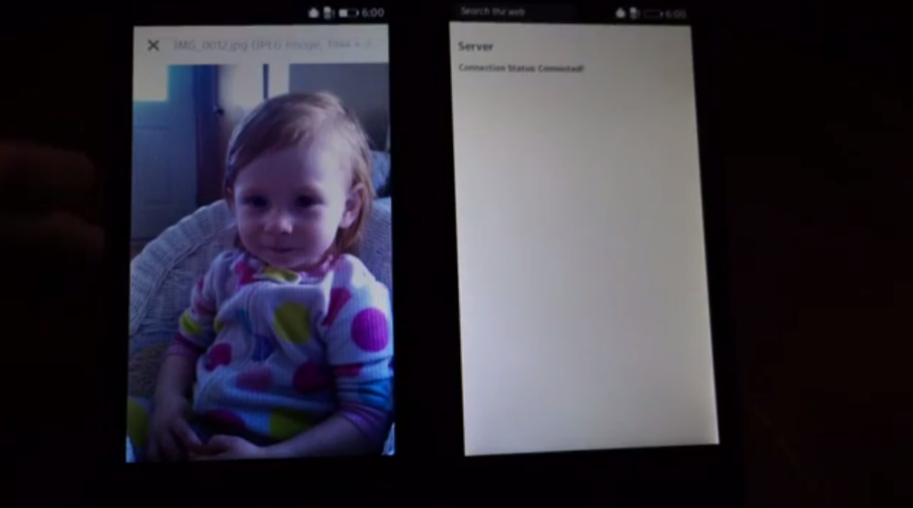

Mozilla 員工在去年底群聚一堂，在一週的時間內共同擬定來年計畫。另有某一團隊也在這一週內成形，並預見到 Firefox OS 未來必會將 Web 的重心擺在點對點 (P2P) 作業之上。確切一點來說，我們正努力駕馭如NFC、WiFi Direct、藍牙等的相關技術，期能達到離線的 P2P 連線功能。

因為這些技術只能算是裝置之間的通訊方式，所以我們當然也需要 App 之間的通訊協定，以利傳送＼接收資料。而說到要在 Web App 之間傳輸資料，我立刻就想到現成、標準、可用的通訊協定，也就是 HTTP。
使用 HTTP，就等於用戶端 App 傳送＼接收資料的所有工具均已完備，但仍需要在瀏覽器中執行 Web 伺服器，以啟動離線 P2P 通訊作業。而此類型 HTTP 伺服器的功能，可能最適合作為標準化的 WebAPI 以成為 Gecko 的一部分。Firefox OS 實際上已經具備了必要的全部工具，立刻就能使用 JavaScript 建構 P2P 的應用！
navigator.mozTCPSocket
封裝式 (Packaged) App 可存取原始的 TCP 與 UDP 網路 socket。但因為我們正使用 HTTP，所以只要考量 TCP socket 即可。TCPSocket API 目前須透過navigator.mozTCPSocket 進行存取，並須於「Privileged」的封裝式 App 中宣告 tcp-socket 的權限：
<code>"type": "privileged",
"permissions": {
"tcp-socket": {}
},
</code>
12345
<code>"type": "privileged","permissions": { "tcp-socket": {}},</code>
如果你認同 P2P 將是 Firefox OS 未來的趨勢，也正需要「HTTP Web Server」的類似功能，可別錯過原文後半部所介紹的程式碼，並有展示影片欣賞喔！